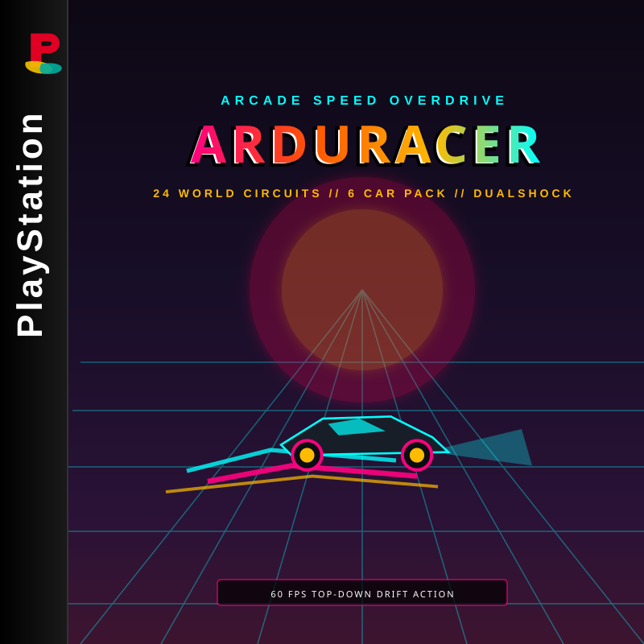
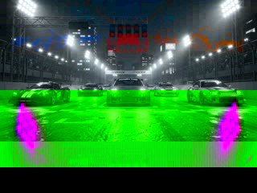
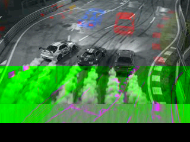
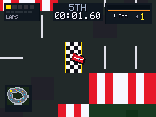
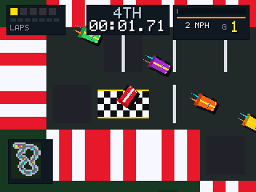

Controller & Keyboard Reference
| Vehicle Action | DualShock Button | Keyboard Key |
|---|---|---|
| Steering (Left / Right) | D-Pad / Left Analog Stick | A / D or Left / Right |
| Throttle / Accelerate | ✖ Cross (or D-Pad Up) | X or K / Up |
| Foot Brake & Reverse | ■ Square (or D-Pad Down) | Z or J / Down |
| Handbrake / Drift Initiation | ● Circle | C or L |
| Nitro Turbo Boost | ▲ Triangle / R1 | V or I |
| Pause Menu / Resume | START | Enter |
| Control Layout / Reset | SELECT | Tab / Shift |
Live Controller HUD
Arcade Motorsport Mechanics
Arduracer PSX is an authentic high-speed top-down arcade racer built directly for Sony PlayStation hardware. Features realistic slip-angle drift physics, kinetic barrier collisions, 6 rival AI personalities, and 24 diverse circuits spanning asphalt, curbs, oil slicks, and turbo boost pads!
⚡ Nitro Turbo Boost
Hold ▲ Triangle or R1 to engage maximum boost. The nitro meter drains dynamically and automatically recharges when navigating regular tarmac.
🔄 Dynamic Drift Physics
Tap ● Circle or counter-steer sharply into apexes to initiate controlled slides. Holding counter-steer stabilizes the slip angle for massive exit speed.
🔧 20-Point Garage Tuning
Customize your machine in the Garage! Distribute 20 points across Top Speed, Acceleration, Grip, and Boost to craft your ideal handling setup.
💾 8 KB Memory Card Saves
Your best lap times, gold cup trophies, unlocked tracks, and custom vehicle tunings are saved in a single authentic PS1 Memory Card block (CRC-16 verified).
Track Surface & Hazard Legend
Asphalt Road: High traction, full engine velocity.
Rumble Curbs: Alternating red & white kerbs. Slight rumble drag; ideal for apex cutting.
Off-Road Grass & Gravel: Speed reduced to 35% with reduced lateral hold.
Oil Slick Puddles: Drops tire friction to zero, sending the vehicle into an uncontrollable spin.
Turbo Chevron Pads: Instantly inject a high-velocity forward turbo impulse!
Armco Barriers: Kinetic deflection bounces your car back while scrubbing kinetic energy.
Championship Cups & All 24 Circuits
Race through 4 full Championship Cups across 24 meticulously verified tracks:
| # | Circuit Name | Checkpoints | Default Ref Lap | Tuned Pro Lap | Style / Theme |
|---|---|---|---|---|---|
| 01 | Arduboy Oval | 4 | 0:06.63 | 0:05.38 | High-Speed Superspeedway |
| 02 | Twin Hairpin | 4 | 0:07.00 | 0:06.03 | Technical Tight Chicanes |
| 03 | The Serpent | 5 | 0:08.10 | 0:06.95 | Rhythmic S-Bends |
| 04 | Canyon Chicane | 10 | 0:12.51 | 0:11.31 | Narrow Mountain Pass |
| 05 | Switchback Pass | 4 | 0:09.20 | 0:07.71 | Uphill Elevation S-Curves |
| 06 | Grand Ring | 8 | 0:10.76 | 0:09.61 | Continuous High-G Outer Ring |
| 07 | Sprint Short | 4 | 0:10.41 | 0:09.43 | Quick-Fire Club Track |
| 08 | Octagon Speedway | 7 | 0:11.06 | 0:09.73 | Geometric 8-Corner Ring |
| 09 | Devil's Elbow | 4 | 0:08.80 | 0:07.05 | Heavy Braking Blind Crest |
| 10 | Metropolis 10 | 5 | 0:10.33 | 0:09.50 | Urban Street Grid |
| 11 | Forest Expressway | 8 | 0:14.03 | 0:10.90 | Scenic Fast Forest Sweepers |
| 12 | Coastal Link | 8 | 0:15.71 | 0:12.88 | Bayside Waterfront Straight |
| 13 | Alpine Drift | 8 | 0:19.90 | 0:17.30 | High-Altitude Snowy Chicanes |
| 14 | Industrial Yard | 5 | 0:11.36 | 0:09.46 | Tight Container Yard Obstacles |
| 15 | Nightway Circuit | 4 | 0:14.70 | 0:11.80 | Midnight Highway Neon Loop |
| 16 | Harbor Slalom | 4 | 0:13.76 | 0:10.73 | Docklands Oil Hazard Maze |
| 17 | Mountain Gauntlet | 10 | 0:15.38 | 0:13.06 | Extreme Switchbacks |
| 18 | Super Speedway | 4 | 0:15.98 | 0:13.43 | Full-Throttle Banked Oval |
| 19 | Endurance Colosseum | 12 | 0:33.26 | 0:28.60 | Long Distance Grand Prix Arena |
| 20 | Championship Final | 13 | 0:37.93 | 0:31.76 | Ultimate 13-Sector Crucible |
| 21 | Neo Tokyo Expressway | 6 | 0:13.76 | 0:10.68 | Super Stage: Cyber Metropolis |
| 22 | Canyon Drift Apex | 8 | 0:19.31 | 0:15.65 | Super Stage: High-Angle Canyon |
| 23 | Cyber Circuit 2097 | 6 | 0:15.51 | 0:12.06 | Super Stage: Future Neon Highway |
| 24 | Monaco GP Classic | 8 | 0:18.23 | 0:15.66 | Super Stage: Historic Street Circuit |
PlayStation Physical Media & Packaging Art
Complete authentic PlayStation retail packaging and screen art drafted for manufacturing:

NTSC-U Front Jewel Case Art Direct Silk-Screened Disc Face
Direct Silk-Screened Disc Face
 Rear Inlay & Barcode Packaging
Rear Inlay & Barcode Packaging
 European PAL Double Jewel Case
European PAL Double Jewel Case
In-Game Screenshots & FMV Intro

FMV Intro: Starting Grid (Fixed MDEC)
FMV Intro: Overhead Apex Drift
Stage 21: Neo Tokyo Expressway
Stage 24: Monaco GP ClassicMaster Disc Images & Hardware Deployment
Run Arduracer natively on genuine PlayStation 1 hardware or your preferred desktop emulator:
Standalone PSX-EXE
MIPS R3000 bare-metal executable (304 KB). Fast boot via Unirom, Caetla, or emulator rapid testing.
Cooked PS1 ISO (.ISO)
Standard 2048-byte Mode 1 ISO filesystem (2 MB). Compact disc image compatible with universal optical disc loaders.
Master Bootable CD (.CUE / .BIN)
Complete Red Book CD image (185 MB) including 6 CD-DA Eurobeat soundtrack tracks and 15fps MDEC intro cinema.
📦 Official GitHub Releases: Pre-packaged release archives with verified SHA-256 checksums, cover artwork, and release notes are published at the GitHub Releases Page.
Hardware Installation Instructions
- Optical Drive Emulators (xStation, MODE, PSIO): Place
arduracer.cueandarduracer.bininside your SD card game folder. Compatible with NTSC-U, NTSC-J, and PAL consoles with automatic 60Hz/50Hz clock scaling. - Physical CD-R: Burn
arduracer.cueusing ImgBurn at 2x or 4x speed onto high quality CD-R media. Boot via modchip or Tonyhax international soft-exploit. - DuckStation / RetroArch: Open DuckStation • File • Start Disc • Select
arduracer.cue. Full CD-DA music will stream seamlessly across all 24 circuits!